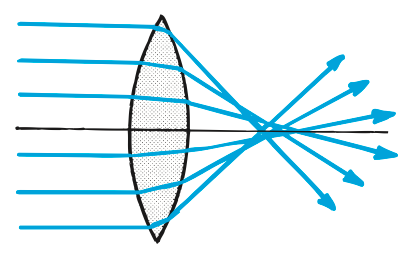

Lens Defects
No lens provides a perfect image. A distortion in an image is called an aberration. By combining lenses in certain ways, aberrations can be minimized. For this reason, most optical instruments use compound lenses, each consisting of several simple lenses instead of single lenses.
Spherical aberration results from light that passes through the edges of a lens and focuses at a slightly different place from where light passing near the center of the lens focuses (Figure 28.52). This can be remedied by covering the edges of a lens, as with a diaphragm in a camera. Spherical aberration is corrected in good optical instruments by a combination of lenses.

Figure 28.53 was omitted because no matching captured image was supplied. Caption: How is vision affected when both eye views are deflected to the side by prisms? After a few minutes the eye, brain, and muscles all adapt to the change!
Chromatic aberration is the result of light of different colors having different speeds and hence different refractions in the lens (Figure 28.54). In a simple lens (as in a prism), different colors of light do not come to focus in the same place. Achromatic lenses, which combine simple lenses of different kinds of glass, correct this defect. (Interestingly, Isaac Newton replaced the objective lens in a telescope with a parabolic mirror to avoid chromatic aberration.)

The pupil of the eye changes in size to regulate the amount of light that enters. Vision is sharpest when the pupil is smallest because light then passes through only the central part of the eye's lens, where spherical and chromatic aberrations are minimal. Also, the eye then acts more like a pinhole camera, so minimum focusing is required for a sharp image. You see better in bright light because in such light your pupils are smaller.
Astigmatism of the eye is a defect that results when the cornea is curved more in one direction than the other, somewhat like the side of a barrel. Because of this defect, the eye does not form sharp images. The remedy is eyeglasses with cylindrical lenses that have more curvature in one direction than in another.
Today, an option for those with poor sight is wearing eyeglasses. The advent of eyeglasses probably occurred in China and in Italy in the late 1200s. (Curiously enough, the telescope wasn't invented until some 300 years later. If, in the meantime, anybody viewed objects through a pair of lenses separated along their axes, such as lenses fixed at the ends of a tube, there is no record of it.) An alternative to eyeglasses is contact lenses. A further alternative is LASIK (an acronym for laser-assisted in-situ keratomileusis), in which pulses of laser light reshape the cornea and produce normal vision. Another procedure, PRK (photorefractive keratectomy), corrects all three common defects in vision. IntraLase, implantable contact lenses, and newer procedures continue to be developed. It's safe to say that wearing eyeglasses and contact lenses may soon be a thing of the past. We really do live in a rapidly changing world. And that can be nice.